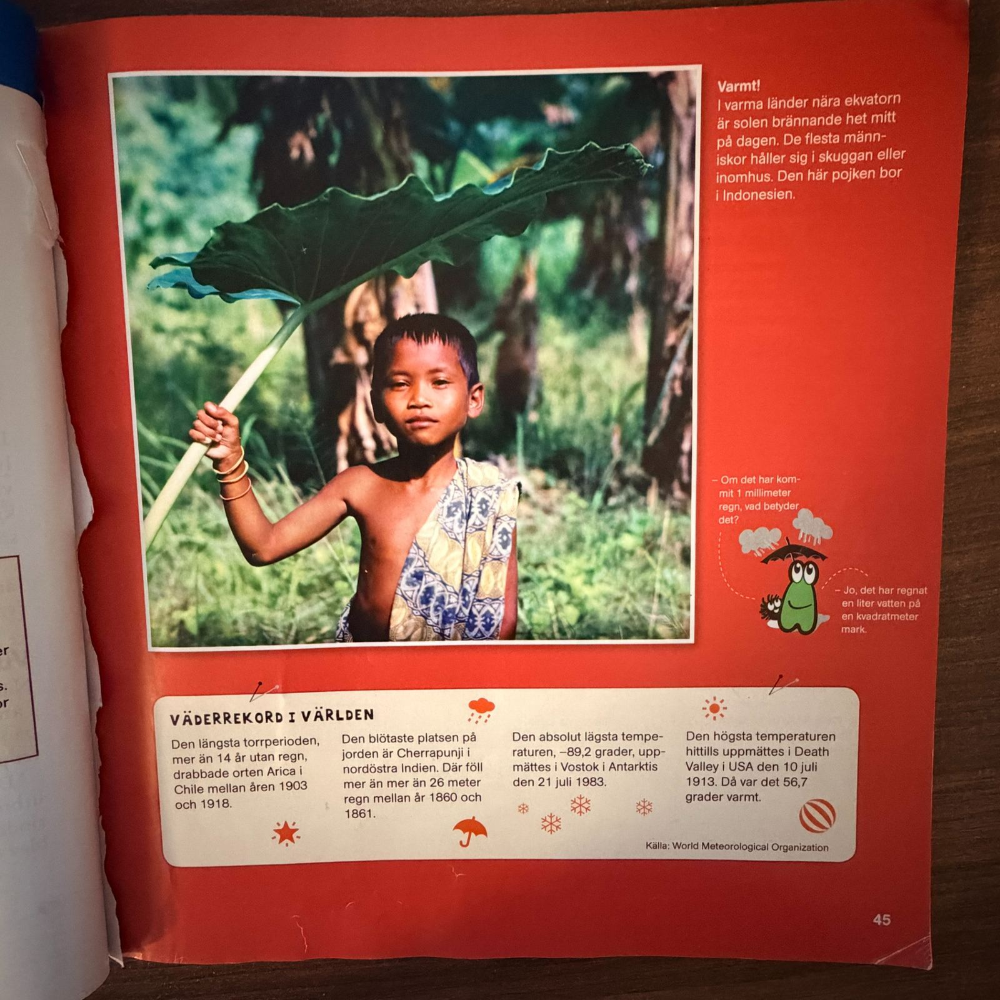

第 45 页 · Varmt!

🇨🇳 第 45 页 · 中文全文翻译
炎热！
在赤道附近的炎热国家，正午时分太阳火辣辣地照射着。大多数人会待在阴凉处或室内。照片中的男孩住在印度尼西亚。
小对话：如果降了1毫米的雨，意味着什么？——这意味着每平方米土地上降下了1升水。
世界天气纪录
最长的干旱期：智利阿里卡在1903年至1918年间，连续超过14年没有降雨。地球上最潮湿的地方：印度东北部的乞拉朋齐，1860年至1861年间降雨超过26米。测得的绝对最低气温：1983年7月21日，南极洲沃斯托克站为零下89.2摄氏度。课本记载的最高气温：1913年7月10日美国死亡谷为56.7摄氏度。数据来源：世界气象组织（这些是教材编写时列出的纪录）。
🧠 第 45 页 · 知识要点
赤道附近的国家，正午阳光很强烈。人们通常待在阴凉处或室内。图片中的男孩住在印度尼西亚。页面还列出了世界上的一些历史天气纪录，这些纪录属于课本编写时的数据。